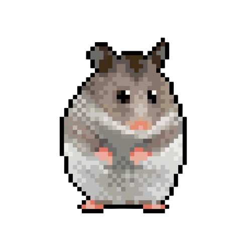

A loop is a smart control structure that repeats a block of code over and over until a specific condition tells it to stop. It saves you time, keeps your code clean, and does all the repetitive work automatically!

Sample Code Hamster do-while Loop:
public class doWhileHamster {
public static void main(String[] args) {
boolean eatSunflower = false;
// He doesn't want the sunflower.
do {
System.out.println("The hamster eats a sunflower");
} while (eatSunflower);
System.out.println("The hamster sleeps instead.");
}
}
/*In this sample code, we created a boolean variable
named eatSunflower with a value of false. This means that the hamster doesn't want
to eat a sunflower.
But since we used the do-while loop, he will still eat
one sunflower regardless if he wants it or not.
After he ate one sunflower, he already decided that he REALLY
doesn't want to eat and he just sleeps instead.
With this, the do-while loop gets terminated since it already executed once even with a
false value.
But what if the value of eatSunflower was true instead? Then the loop will execute
infinitely as long as the value stays true.
Here is the output of the original code for better understanding.*/
OUTPUT:
The hamster eats a sunflower
The hamster sleeps instead.